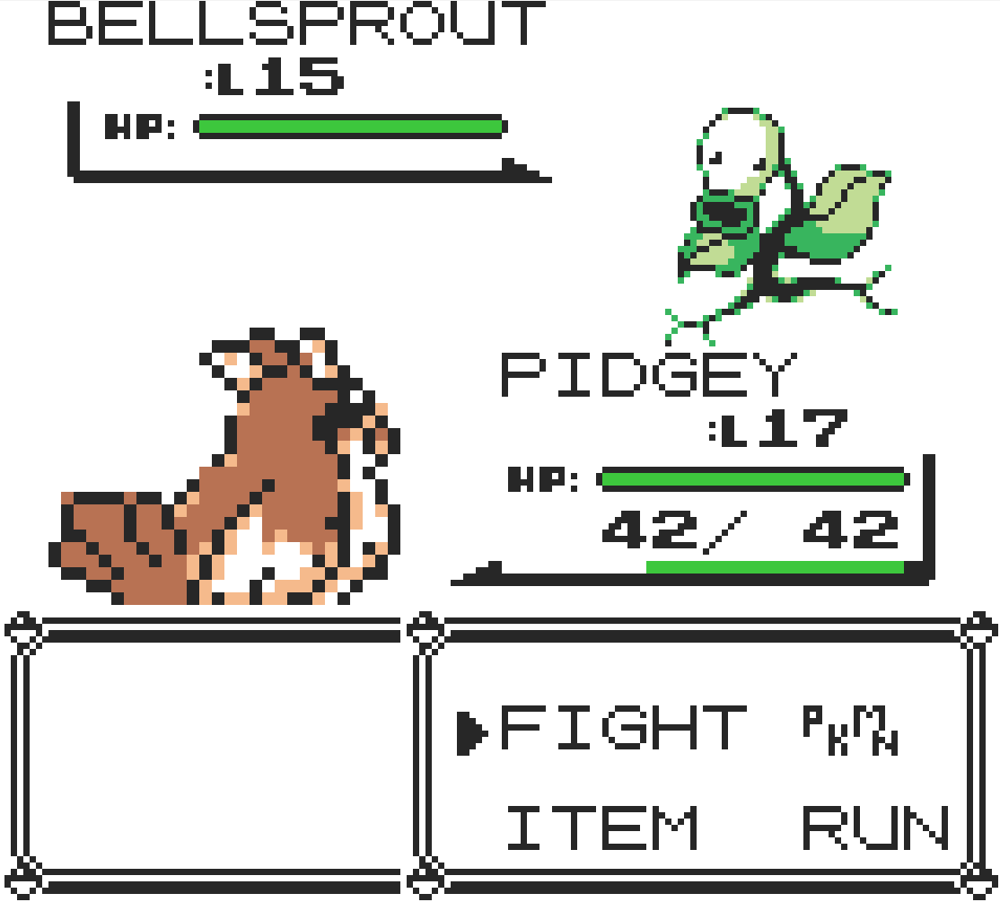
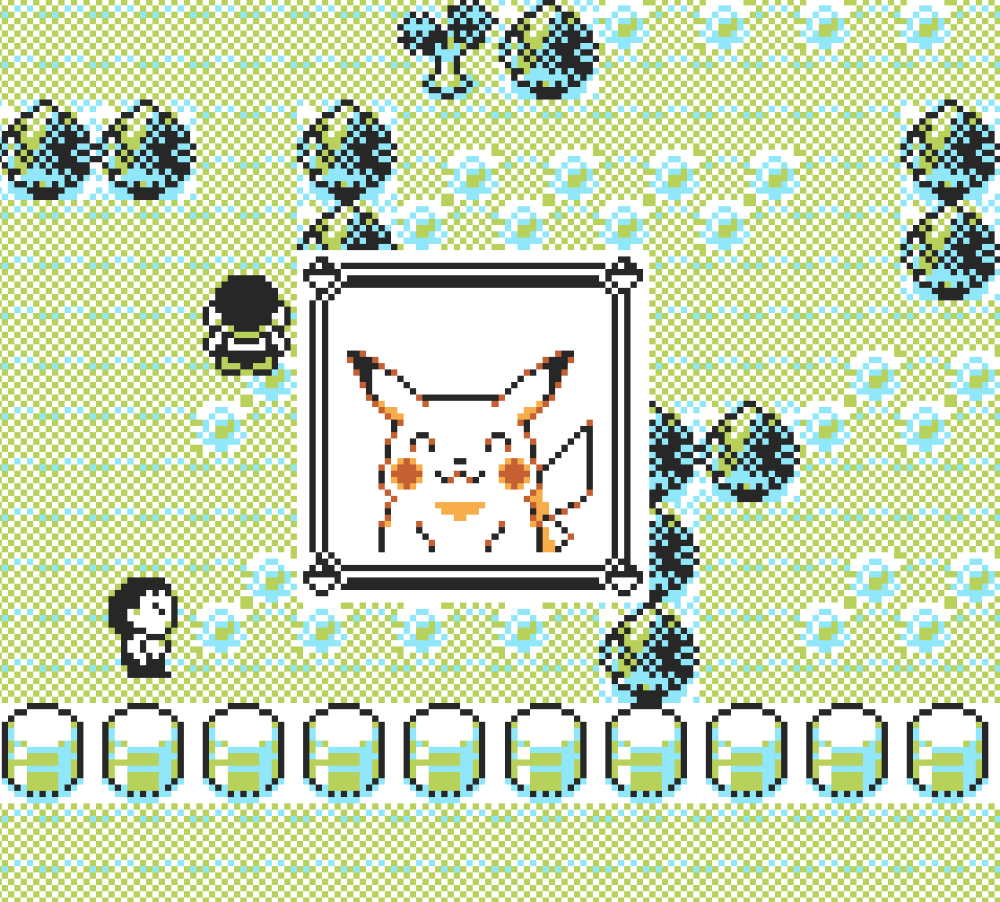
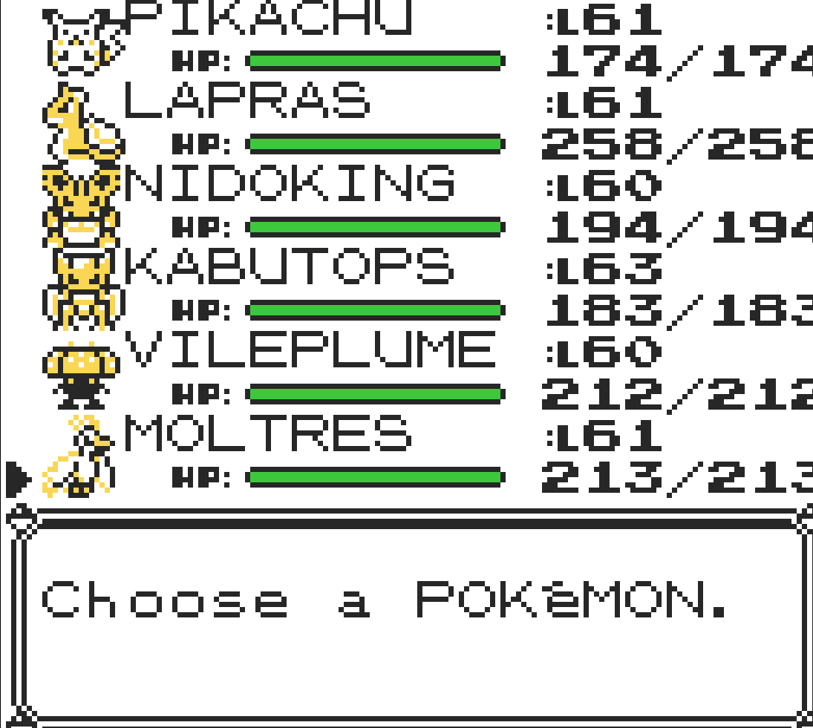

Pokemon Yellow Legacy
Desenvolvedor(a):TheSmithPlays
Publicadora: É uma hackroom feita atraves do pokemon yellow
Gênero: RPG Turno/Aventura
Engine: Game Boy - 1° geração do Pokemon
Plataformas: Microsoft Windows, Mobile
Data de Lançamento: 14/05/2024
Introdução
Dois anos após o lançamento de Pokémon Red e Blue, a Nintendo lançou Pokémon Yellow, uma versão aprimorada desses jogos, no Japão em 1998, e na América do Norte e Europa em 1999 e 2000. O jogo foi projetado para se assemelhar à série de anime Pokémon, com o jogador recebendo um Pikachu como seu starter e seu rival iniciando a jornada com um Eevee. Alguns personagens não jogáveis também foram inspirados no anime, como Jessie e James da Equipe Rocket.
Fonte: Wikipedia
Esta é a sinopse do jogo original, mas a versão Pokémon Yellow Legacy, criada pelo youtuber TheSmithPlays, traz várias melhorias em relação ao jogo clássico. Nesta review, irei destacar algumas dessas melhorias.
Mecânica
A mecânica de andar com o Pikachu sempre foi um dos destaques do jogo original. Além disso, era possível montar uma equipe semelhante à do Ash no anime, composta por Pikachu e os três iniciais de Kanto. As principais melhorias em Pokémon Yellow Legacy incluem:
- Adição de novos ataques.
- Possibilidade de substituir HMs a qualquer momento.
- Inclusão do Running Shoes para aumentar a velocidade do jogador.
- Opção de jogar com a protagonista feminina (Green).
- Adição de uma barra de experiência visível.
Outro ponto positivo é que o Pikachu ganha atributos extras ao derrotar líderes de ginásio, tornando-se mais útil no final do jogo
A dificuldade também foi ajustada: a partir do quinto ginásio, os líderes possuem mais Pokémon e níveis mais altos, tornando o desafio mais interessante. As batalhas contra Sabrina e Blaine, por exemplo, foram particularmente difíceis devido à força de suas equipes. O jogo também permite rebatalhar contra todos os líderes de ginásio e a Elite Four com níveis aumentados.
Gráficos
O maior ponto fraco do jogo são os gráficos. Diferente de Pokémon Red e Blue, onde tudo era monocromático, cada cidade e área em Pokémon Yellow Legacy possui sua própria paleta de cores, o que é um detalhe positivo.
Os sprites dos Pokémon estão bem desenhados, mas as versões traseiras são de qualidade inferior. Além disso, as animações dos ataques são simples. No entanto, considerando que o jogo utiliza uma engine baseada na primeira geração de Pokémon (1996), essa limitação é compreensível.
Trilha Sonora
A trilha sonora do jogo é bem executada. As músicas das batalhas são marcantes, e a famigerada Lavender Town Theme continua sendo uma das mais icônicas da franquia.
História
A história segue o padrão dos jogos clássicos da série, mas possui dois elementos que a tornam mais interessante:
- O rival Blue é um dos mais competitivos da franquia, sempre trocando seu time em busca dos Pokémon mais fortes, o que dá uma sensação de rivalidade realista.
- A trama da Equipe Rocket foi aprimorada com a adição de Jessie e James como chefes secundários. Isso torna as batalhas contra eles mais significativas e cria um elemento narrativo inédito para a primeira geração.
Otimização
O jogo é muito bem otimizado. Ele roda sem problemas, tem um balanceamento adequado para evitar grinding excessivo e permite utilizar todos os Pokémon disponíveis na geração sem dificuldades.
Veredito Final
Pokémon Yellow Legacy é uma excelente revisão do clássico Pokémon Yellow, trazendo melhorias na jogabilidade, na dificuldade e na narrativa. O jogo preserva a essência do original e adiciona elementos modernos que tornam a experiência ainda mais envolvente.
Os gráficos são o ponto mais fraco, mas isso é compreensível devido à engine utilizada. A trilha sonora é nostálgica e continua memorável. A jogabilidade aprimorada, aliada às novas opções, faz deste um dos melhores rom hacks da primeira geração de Pokémon.Se você é fã da franquia e quer revisitar Kanto com melhorias significativas, Pokémon Yellow Legacy é uma excelente opção.
Nota: 87
Voltar para a página principal